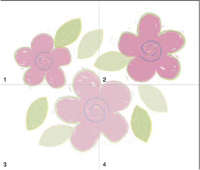

About page tiling
By default, Illustrator prints your artwork on a single sheet of paper. However, if the artwork is larger than the page sizes available on your printer, you can print onto multiple sheets of paper.
Dividing the artboard to fit a printer’s available page sizes is called tiling. You can choose a tiling option in the Setup section of the Print dialog box. To view the page tiling boundaries on the artboard, choose View > Show Page Tiling.

When you divide the artboard into multiple page tiles, the pages are numbered from left to right and from top to bottom, starting with page 1. These page numbers appear on‑screen for your reference only; they do not print. The numbers enable you to print all of the pages in the file or specify particular pages to print.